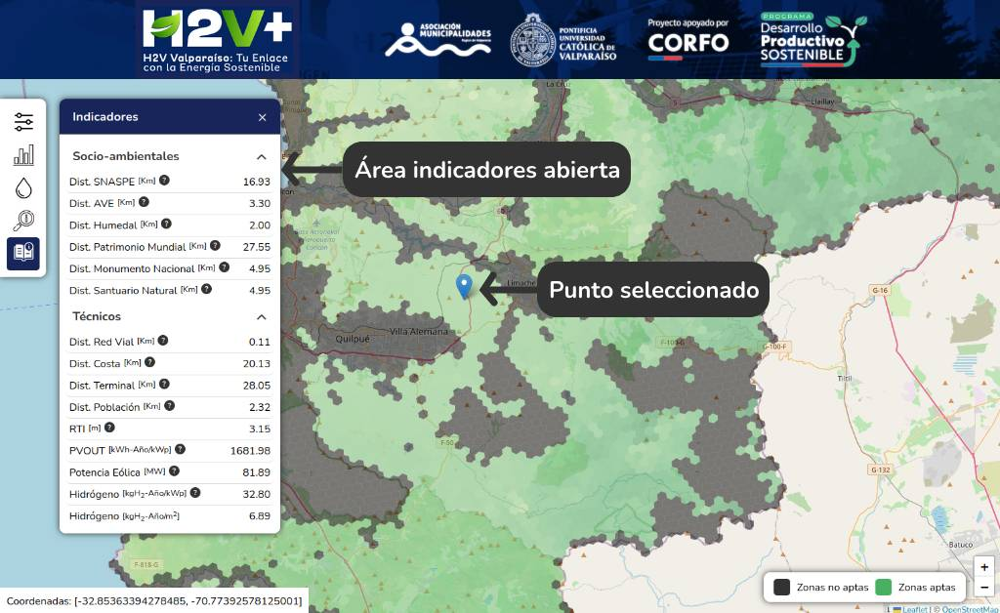
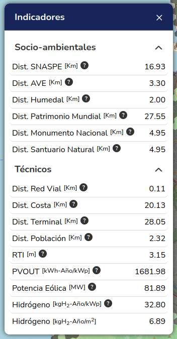

Introducción
H2V Valparaíso es una plataforma web interactiva diseñada para apoyar la
planificación
de proyectos de Hidrógeno Verde en la Región de Valparaíso. Ha sido desarrollada por la
Pontificia
Universidad Católica de Valparaíso con apoyo de CORFO y la Asociación de Municipalidades de la
región,
en el marco del plan nacional de hidrógeno. Su objetivo principal es identificar los territorios
más
aptos para la instalación de proyectos de hidrógeno verde, proporcionando información técnica,
ambiental
y social de forma transparente y accesible. En otras palabras, la plataforma busca disminuir la
brecha
de información para la toma de decisiones de autoridades públicas, empresas y comunidades,
entregando
datos relevantes sobre el potencial energético y las restricciones de cada zona.
¿A quién está dirigida?
Este manual está orientado a usuarios con bajo conocimiento técnico, como funcionarios públicos
municipales y regionales, líderes comunitarios y otras personas interesadas. Se ha redactado en
un
lenguaje claro y sencillo, evitando tecnicismos, para que cualquier usuario pueda entender el
propósito
de la plataforma y cómo utilizarla paso a paso.
¿Qué ofrece la plataforma?
H2V Valparaíso permite navegar un mapa de la región y visualizar, comuna por comuna, qué áreas
del
territorio serían adecuadas para producir hidrógeno verde según criterios socio-ambientales (por
ejemplo, cercanía a áreas protegidas) y técnicos (por ejemplo, potencial solar o eólico
disponible).
La
plataforma muestra el territorio con distintos colores o indicadores, señalando el cumplimiento
de
estos
factores en cada zona. Además, sirve como punto de partida para evaluar proyectos, permitiendo
al
usuario verificar si un sitio específico cumple con las condiciones recomendadas antes de
avanzar
con
estudios más detallados.
En resumen, H2V Valparaíso es una herramienta de apoyo a la decisión: brinda
información geográfica integrada para que los tomadores de decisiones puedan identificar de
antemano
oportunidades y restricciones para proyectos de hidrógeno verde en la región. A continuación,
aprenderemos a usar la plataforma paso a paso, desde la navegación básica del mapa hasta la
interpretación de los indicadores clave.
Acceso y vista general de la plataforma
Para acceder a la plataforma H2V Valparaíso, siga estos pasos iniciales:
Ingreso al sitio web
Abra un navegador web (por ejemplo, Chrome, Firefox) y visite la URL de la plataforma:
https://h2v.h2in.cl/plataforma/,
es necesario seleccionar el tipo de usuario..
No es necesario registrarse ni ingresar credenciales; el sitio está abierto para funcionarios
públicos y
público general.
Figura 1: Vista inicial al ingresar a la aplicación, indicando
el campo Tipo de usuario y el botón para continuar al mapa.
Carga de la aplicación
Espere unos segundos a que cargue la aplicación web interactiva. Verá en pantalla un mapa de la
Región de Valparaíso junto con un panel de menús. Una vez cargada, la interfaz típica se
compone de:
-
El mapa principal, que ocupa la mayor parte de la pantalla, mostrando el
territorio
regional con diferentes capas de información superpuestas.
-
Un menú lateral con secciones como
“Comunas”, “Indicadores”, “Recursos Hídricos”, "Descripción indicadores" y "Manual de
usuario". Este menú le permite activar o desactivar
distintas capas del mapa y ver información detallada.
-
Coordenadas: Indica las coordenadas geográficas del cursor.
Figura 2: Vista general de la interfaz de H2V Valparaíso, con el
mapa principal de la región y el menú lateral de capas abierto.
Navegación por el mapa
La plataforma utiliza un mapa interactivo que funciona de manera similar a otras aplicaciones
cartográficas en línea (como Google Maps, por ejemplo). A continuación, se explica cómo moverse
por
el
mapa:
Acercar o alejar (zoom)
Para acercarse a una zona específica (zoom in), puede usar el botón “+” que aparece sobre
el
mapa
(esquina inferior derechar), o alternativamente usar la rueda de scroll del mouse hacia
adelante.
Para alejar la vista (zoom out), use el botón “–” o la rueda del mouse hacia atrás.
También puede usar gestos de pellizcar (pinch) en pantallas táctiles.
Desplazamiento (panorámica)
Haga clic y mantenga presionado el botón izquierdo del mouse sobre el mapa, luego arrastre en la
dirección deseada para mover la vista del mapa.
En pantallas táctiles, arrastre con un dedo para desplazarse. Esto le permite “viajar” por la
región
de
Valparaíso y enfocar el sector de su interés (por ejemplo, su comuna).
Consejo
Comience orientándose. Ubique elementos conocidos en el mapa, como las ciudades principales
(Valparaíso,
Viña del Mar, San Antonio, etc.) o accidentes geográficos (la costa, el Río Aconcagua, etc.).
Esto le ayudará a reconocer las zonas en el mapa. También puede activar la capa de “Límite de
comunas”
(ver siguiente sección) para ver los contornos de cada comuna, lo que facilita identificar cada
territorio.
Consultar un punto en el mapa (ver los indicadores)
Una de las funciones principales de H2V Valparaíso es que permite conocer las
condiciones de cualquier punto del mapa dentro de la región.
Al hacer clic en un lugar, la plataforma entrega automáticamente los valores de todos los
indicadores
para ese sitio.
Es como obtener una ficha técnica y ambiental con un solo clic. A continuación
te
explicamos cómo hacerlo paso a paso:
1. Busca el lugar que te interesa
Desplázate por el mapa hasta ubicar el terreno que deseas evaluar. Por ejemplo, puede ser un
sitio
dentro de tu comuna que consideras apropiado para un proyecto de hidrógeno.
Acércate usando el zoom para verlo con más claridad.
- Si tienes las coordenadas exactas, ubícalas visualmente en el mapa.
- Si no, guíate por referencias geográficas como caminos, ríos o poblados cercanos.
2. Haz clic en el mapa
Haz clic izquierdo sobre el punto exacto que deseas consultar.
- La plataforma mostrará los indicadores de ese sitio, abriendo un cuadro emergende desde el
menú lateral.
- Asegúrate de hacer clic dentro de la Región de Valparaíso. Si haces clic
fuera
de
la región o en el mar, puede que no aparezca nada útil.

Figura 7: Vista después de hacer clic en un punto, se muestra el
pin y la sección de indicadores que se abre.
3. Revisa los indicadores que aparecen
Después del clic, se mostrarán los valores actualizados de los indicadores. Algunos ejemplos:
- Dist. SNASPE: 16.93 km (distancia a la reserva o parque más cercano)
- Dist. Red Vial: 0.11 km (distancia a la carretera principal más cercana)
- PVOUT: 1681.98 kWh-Año/kWp (potencial solar del sitio; este valor es alto)
- Hidrógeno: 6.89 kgH₂-Año/m² (producción estimada por metro cuadrado al año)

Figura 8:Tabla con el valor de distintos indicadores en el punto
seleccionado.
4. Revisa si el sitio cumple los requisitos
Además de los números, la plataforma puede indicar si el lugar cumple o no con los requisitos
mínimos
para un proyecto.
- Si hay algún problema, aparecerá el mensaje “Área no
cumple
con los requisitos”.
- Si todo está bien no habrá ninguna alerta negativa.
Estos mensajes automáticos se basan en reglas como:
- No se puede instalar un proyecto en áreas protegidas como parques nacionales.
- Si el punto está dentro de una zona prohibida o demasiado cerca de una ciudad, será marcado
como no apto.
Figura 9: Aviso que aparece al hacer clic en una punto que no
cumple los requisitos para un proyecto de Hidrógeno verde.
5. Interpreta los resultados y decide
Con los datos en pantalla, analiza si el lugar es viable:
- ¿Está suficientemente lejos de áreas protegidas? (más de 5 km suele ser aceptable)
- ¿Está cerca de infraestructura clave? (menos de 10 km de una carretera es bueno; más de 50
km
puede
ser costoso)
- ¿Tiene buen potencial solar o eólico? (en la zona central de Chile, un PVOUT de ~1700 es muy
bueno)
- ¿Hay acceso a agua? (si está lejos de la costa o no hay fuentes cercanas, puede ser un
desafío)
Si el sitio no cumple, identifica cuál indicador lo impide, estará indicado con
color rojo y la palabra
"Inhabilita".
A veces basta con moverse unos kilómetros y volver a hacer clic para encontrar un lugar
más apto
(por
ejemplo, alejándose de un parque o monumento).
Figura 10:
Tabla destacando el indicador que inhabilita la realización de un proyecto de hidrógeno verde en
el punto seleccionado.
Ejemplo práctico: Evaluar un sitio para un proyecto H₂V en su comuna
A continuación, ilustramos un caso práctico paso a paso, asumiendo el rol de un funcionario
municipal
que desea evaluar un lugar específico en su comuna:
Situación de ejemplo
Usted es un/a encargado/a de medioambiente del Municipio X. Ha escuchado de un
terreno
rural en su comuna, cercano a una carretera y relativamente soleado, que podría ser adecuado
para
una
planta de hidrógeno verde con energía solar. Quiere usar la plataforma H2V
Valparaíso
para una pre-evaluación.
Paso 1: Ubicar la comuna y el sitio en el mapa
Abra la plataforma y active la capa “Límite de comunas” (sección Comunas) para
resaltar
su municipio. Supongamos que es la Comuna de Catemu. Encuentre Catemu en el mapa; use el zoom
hasta
abarcar la zona entera de la comuna.
Identifique referencias: la Carretera CH-5 (Panamericana) pasa cerca del límite
de
Catemu, y la comuna colinda con Llay-Llay y Panquehue al sur.
Digamos que el sitio de interés está unos kilómetros al sur del pueblo de Catemu, entre la
Autopista Panamericana y la Ruta 60. Ubíquelo visualmente.
Figura 11: Referencias en el mapa para la zona de interes.
Paso 2: Seleccionar el punto y obtener indicadores
Haga clic en el terreno de interes, se desplegará el menú con los indicadores:
- PVOUT: Para ver el potencial solar. El área seleccionada tiene un valor de
1828.81 kWh-Año/kWp, lo
que
indica
buen sol.
- Potencial Eólico: Probablemente menor en esta comuna interior que en zonas
costeras, 65.70 Mw.
- SNASPE: Para verificar áreas protegidas. Catemu no tiene parques
nacionales,
así
que se mostrara un valor alto, 15.25 Km en este caso.
- Dist. Red Vial: 0.04 km (muy cercano a la carretera principal, excelente
acceso).
Estas capas permiten intuir que la fuente energética más adecuada será solar, y que no hay
restricciones
ambientales evidentes.
La plataforma no muestra mensaje de “Área no cumple con los
requisitos”, lo que indica que el sitio cumple
con
los
criterios mínimos definidos.
Revise también los indicadores socio-ambientales: Dist. Humedal, Dist.
Santuario,
etc.
En este caso, todos muestran valores aceptables, lo que refuerza la viabilidad.
Figura 12: Indicadores para la zona seleccionada
Paso 3: Analizar los resultados y decidir pasos siguientes
Con esta información, puede concluir preliminarmente que el sector al sur de Catemu,
cerca
de la
Ruta CH-5, es prometedor para un proyecto de hidrógeno verde solar.
Cumple aspectos clave:
- Ambientales: no hay restricciones evidentes.
- Infraestructura: buena conectividad vial.
- Potencial solar: alto.
La única limitación es la fuente de agua, ya que al estar tierra adentro, no
hay
desalinizadora cerca. Se podría considerar el Río Aconcagua (que cruza la
comuna) o
permisos de aguas subterráneas.
La plataforma permitió validar la idea de manera rápida. Como siguiente paso, se recomienda
encargar
estudios específicos de agua y suelos.
Sin embargo, gracias a H2V Valparaíso ya cuenta con una base técnico-geográfica que respalda la
factibilidad inicial.
¿Qué significa cada indicador? (Resumen)
En esta sección brindamos una explicación breve y simple de cada indicador que aparece en la
plataforma,
para que el usuario entienda su relevancia sin necesidad de ser experto:
Distancia a SNASPE
SNASPE es el Sistema Nacional de Áreas Silvestres Protegidas del Estado, que incluye parques
nacionales,
reservas nacionales, monumentos naturales, etc. Este indicador muestra qué tan lejos está un
punto de alguna
de esas áreas protegidas. ¿Por qué importa? Porque la legislación prohíbe
proyectos
industriales dentro o muy cerca de estos lugares. Un valor grande (lejos) es bueno; un valor
pequeño (cerca,
por ejemplo <1 km) indica posible conflicto ambiental.
Distancia a AVE
Áreas de Valor Ecológico, generalmente zonas de biodiversidad importante (pueden ser bosques
nativos, áreas
de conservación no necesariamente SNASPE). Indica cercanía a ecosistemas sensibles.
¿Por qué importa? Similar a SNASPE, para evitar impactar ecosistemas valiosos,
aunque no
sean parques oficiales.
Distancia a Humedal (Sitio Ramsar)
Mide la distancia a humedales protegidos internacionalmente bajo la Convención Ramsar.
Importancia: Los humedales son ecosistemas frágiles; proyectos cerca de ellos
podrían ser
rechazados. Un sitio ideal estaría lejos de humedales para no afectarlos.
Distancia a Sitio de Patrimonio Mundial
Si hay algún Patrimonio de la Humanidad UNESCO cerca (por ejemplo, el Barrio Histórico de
Valparaíso), este
número lo dirá. Importancia: Son sitios culturales/naturales de valor
excepcional; por
normativa, proyectos en sus cercanías deben ser evaluados con mucho cuidado para no ponerlos en
riesgo.
Distancia a Monumento Nacional
Monumentos Nacionales pueden ser edificios históricos, zonas típicas u objetos protegidos por la
ley
chilena. Este valor muestra la proximidad a cualquiera de ellos. Importancia:
Evitar dañar
patrimonio cultural; usualmente, si es muy cercano, habrá mayores restricciones o se requerirán
autorizaciones especiales.
Distancia a Santuario de la Naturaleza
Sitios declarados como santuario natural en Chile (áreas privadas o públicas protegidas por su
importancia
natural). Importancia: Similar a SNASPE, no es deseable instalar proyectos
adyacentes que
puedan alterar esas áreas.
Distancia a Red Vial
Muestra qué tan lejos está el punto de la carretera o camino importante más cercano.
Importancia: La logística de construcción y operación mejora con buen acceso
vial. Un
proyecto lejos de caminos implica construir vías de acceso largas (costosas) y dificultades para
mover
equipos o transportar el hidrógeno producido. Idealmente, se busca estar cerca de rutas
existentes.
Distancia a la Costa
Indica la cercanía al mar. Importancia: Para proyectos que planean exportar
hidrógeno o sus
derivados (ej. amoníaco) en barco, estar cerca de la costa/puerto es clave. Además, cerca de la
costa se
puede acceder a agua de mar para procesos (vía desalación). Por otro lado, zonas costeras pueden
tener
consideraciones ambientales (ej. humedales costeros) o urbanas, pero en general esta métrica se
piensa en
términos logísticos.
Distancia a Terminal Marítimo
Similar al anterior, pero específico a puertos o terminales. Importancia: Un
proyecto muy
cerca de un puerto existente tiene ventaja para exportar o recibir insumos. Le evita tener que
construir un
nuevo puerto. Si el indicador muestra, por ejemplo, 50 km, significa que tendría que transportar
el producto
50 km hasta embarcarlo, lo cual agrega complejidad.
Distancia a Población
Indica qué tan cerca hay centros poblados (ciudades, pueblos). Importancia: Se
prefiere
generalmente cierta distancia de seguridad respecto a poblaciones por varios motivos: riesgo
(aunque el H₂
verde es limpio, su almacenamiento a gran escala tiene consideraciones de seguridad), evitar
molestias
(ruido de plantas, tránsito de camiones) y facilitar la aceptación ciudadana. Un valor alto
(lejos de la
gente) es bueno para reducir conflictos, pero tampoco tan remoto que no haya fuerza laboral
disponible.
Rugosidad del Terreno (RTI)
Es una medida de cuán desigual es la superficie del suelo (geografía).
Importancia: Para la
energía eólica, la rugosidad afecta la calidad del viento: terrenos muy rugosos (bosques densos,
ciudades,
cerros abruptos) generan turbulencias y disminuyen la eficiencia eólica. Además, un terreno muy
irregular
puede encarecer las obras civiles. Un valor bajo de RTI (terreno liso, despejado) es favorable
para instalar
aerogeneradores y paneles con menos adaptación del terreno.
PVOUT (Potencial Solar)
Es la energía fotovoltaica que se puede generar anualmente por cada kWp instalado en ese sitio.
En unidades
kWh/kWp por año, indica la productividad solar. Importancia: Este es un
indicador clave si
se planea usar energía solar. Valores típicos en la región pueden rondar 1500–1800 kWh/kWp*año;
cuanto más
alto, mejor. Un PVOUT alto significa que, con la misma inversión en paneles solares, obtendrá
más energía en
ese lugar que en otro con PVOUT bajo. Chile, especialmente zonas del norte chico y centro, tiene
PVOUT altos
comparados al promedio mundial. En resumen, PVOUT refleja la “calidad del sol” del sitio.
Potencial Eólico
Representa cuánta potencia eólica podría generarse. A veces está expresado en una unidad de
potencia (MW)
que podría instalarse aprovechando el viento existente. Importancia: Si este
valor es alto,
significa que los vientos en el sitio son consistentemente fuertes y aprovecharlos con turbinas
eólicas
sería eficiente. Si es muy bajo, quizás no vale la pena instalar aerogeneradores allí y es mejor
enfocarse
en solar.
Potencial de Hidrógeno
Combina los recursos renovables disponibles para estimar producción de hidrógeno verde. Puede
darse como kg
de H₂ por año por cada kW de electrólisis instalado, o por área. Importancia:
Es una forma
de resumir el atractivo energético del sitio específicamente para hidrógeno. Un número más alto
significa
que con los recursos locales podría generar más hidrógeno (sea vía solar, eólico, o mixto). Este
indicador
facilita comparar sitios: por ejemplo, si un lugar A puede generar 10 kg H₂/kWp al año y otro
lugar B 8 kg
H₂/kWp, el lugar A tiene mejor retorno energético potencial.
Este conjunto de indicadores cubre las dimensiones esenciales: ambientales (evitar áreas
protegidas),
sociales (distancia a población), técnicas (infraestructura y recursos energéticos) y de insumos
(agua, que,
aunque no tiene un indicador numérico directo, se infiere con la capa de recursos hídricos).
Todos ellos en
conjunto determinan si un área “cumple los requisitos” para un proyecto H2V. La plataforma
incorpora estos
criterios basándose en leyes nacionales e internacionales relevantes, por lo que usarla le ayuda
a alinear
su evaluación con las normativas vigentes.
Glosario Básico
A continuación, definimos en términos simples algunos conceptos técnicos clave mencionados en la
plataforma y en este manual:
- Hidrógeno Verde (H₂V)
- Hidrógeno producido mediante procesos alimentados por energías renovables (solar, eólica,
etc.), con cero emisiones de carbono en su generación. Se le dice “verde” porque, a
diferencia del hidrógeno convencional obtenido de gas natural (hidrógeno gris) que emite
CO₂, el hidrógeno verde es limpio y sostenible. Ejemplo: usar electricidad solar
para separar agua (electrólisis) y obtener hidrógeno es un proceso de hidrógeno verde.
- Electrólisis
- Proceso químico que utiliza electricidad para separar los elementos de un compuesto. En el
contexto de H₂V, suele referirse a la electrólisis del agua, donde se descomponen moléculas
de agua (H₂O) en hidrógeno y oxígeno aplicando corriente eléctrica. Es la tecnología central
para producir hidrógeno verde usando electricidad renovable.
- PVOUT (Potencial Fotovoltaico)
- Es una medida del potencial solar fotovoltaico utilizable en un sitio. Técnicamente, son los
kilowatt-hora de electricidad que podría generar un sistema solar de 1 kW pico en un año en
ese lugar. Se expresa en kWh/kWp*año. Simplificando: indica cuánta energía
solar se puede generar; un PVOUT de 1700 kWh/kWp*año significa que un panel de 1 kW
produciría 1700 kWh al año allí. Este índice viene de herramientas como Global Solar Atlas.
- kWp (Kilovatio pico)
- Unidad de potencia máxima de un sistema fotovoltaico bajo condiciones estándar. Es la
“capacidad instalada” en términos de paneles solares. 1 kWp equivale a 1000 W de potencia
solar nominal. En palabras simples, es la potencia que un panel o conjunto de paneles puede
entregar en su punto óptimo. Se usa junto con PVOUT para calcular generación: (Potencia en
kWp) * (PVOUT) ≈ kWh generados por año.
- SNASPE
- Acrónimo de Sistema Nacional de Áreas Silvestres Protegidas del Estado. Conjunto de áreas
protegidas por ley en Chile, administradas principalmente por CONAF, que incluye Parques
Nacionales, Reservas Nacionales y Monumentos Naturales. En estas áreas se prohíbe la mayoría
de las actividades que alteren la naturaleza (como construcciones, explotación de recursos).
La plataforma usa SNASPE para alertar si un sitio está dentro o cerca de una zona donde un
proyecto podría ser inviable por protección ambiental.
- Sitio Ramsar
- Humedal de importancia internacional protegido bajo la Convención de Ramsar. Son ecosistemas
acuáticos (lagunas, marismas, estuarios) reconocidos por su valor ecológico global. Chile
tiene varios sitios Ramsar. Un proyecto cerca de uno de ellos requiere especial cuidado
ambiental.
- Santuario de la Naturaleza
- Categoría chilena de área protegida (puede ser pública o privada) definida por su valor para
la conservación de la naturaleza. Se decreta a nivel nacional y suelen ser sitios más
pequeños que un parque nacional pero igualmente importantes a preservar (ej: una colina con
vegetación única, un humedal urbano, etc.).
- Monumento Nacional
- En este contexto ambiental, puede referirse a Monumento Natural (que es parte de SNASPE) o a
monumentos nacionales histórico-culturales. Dado que en indicadores se separan Patrimonio
Mundial y Monumento Nacional, aquí Monumento Nacional refiere a monumentos
histórico-culturales protegidos (ej: edificios patrimoniales, zonas típicas). Un proyecto
industrial cerca de uno puede afectar el paisaje o contexto patrimonial.
- Electrolizador
- (No aparece textual en la plataforma, pero relacionado a electrólisis) Es el dispositivo o
planta que realiza la electrólisis del agua. Convierte electricidad en hidrógeno separando
el agua en hidrógeno y oxígeno. Se mide en kW o MW de capacidad (coincidente con la cantidad
de hidrógeno que puede producir por hora). En proyectos H₂V, es el corazón donde se produce
el hidrógeno.
- Ruta crítica ambiental
- (Concepto general, no un término de la plataforma, pero útil en contexto) Son todos aquellos
factores ambientales que pueden frenar un proyecto. Por ejemplo, la presencia de un Parque
Nacional en el sitio es una ruta crítica (difícil de sortear). La plataforma ayuda a
identificar estas rutas críticas tempranamente.
Nota: Este glosario resume términos de forma básica. Para más
detalles técnicos, se
puede consultar documentos especializados o las referencias indicadas en la misma plataforma. El
objetivo es que el lector maneje estas definiciones mínimas al usar H2V Valparaíso.
Preguntas Frecuentes (FAQ)
A continuación, respondemos algunas dudas comunes que pueden surgir al usar la plataforma:
-
P1. ¿La plataforma me dice exactamente dónde construir una planta de hidrógeno verde?
-
No exactamente. La plataforma no “recomienda” sitios en forma explícita, sino que entrega
información para que usted evalúe. Es una herramienta de apoyo a la decisión. Le
mostrará dónde hay condiciones favorables o desfavorables (por ejemplo, zonas con in
indicador que inhabilita), e incluso le avisará si un punto no cumple
requisitos básicos. Pero la decisión final de dónde desarrollar un proyecto involucra
más análisis en terreno, estudios de factibilidad detallados y consideraciones
económicas. H2V Valparaíso le ayuda a filtrar y priorizar áreas, mas no reemplaza
estudios profesionales de ingeniería o ambientales.
-
P2. ¿Cuán actuales y confiables son los datos mostrados?
-
Los datos provienen de fuentes oficiales y actualizadas al momento del desarrollo del
proyecto (2023-2024). Por ejemplo, el potencial solar (PVOUT) se basa en el Global Solar
Atlas del Banco Mundial, el potencial eólico y otros indicadores técnicos se tomaron de
estudios recientes (como San Martín et al., 2023, citado en la plataforma), y las capas
de áreas protegidas se basan en registros legales (CONAF, Ministerio de Medio Ambiente).
Todos esos datos son de carácter público y confiable. Sin embargo, puede haber cambios
con el tiempo: nuevas rutas, nuevas áreas protegidas, etc. La plataforma irá
incorporando actualizaciones en la medida de lo posible. Siempre es bueno verificar si
hay cambios locales (por ejemplo, una nueva ruta en construcción no contemplada en la
capa actual). En general, puede confiar en que la información es válida como referencia
inicial, pero para etapas posteriores de un proyecto se deberán usar fuentes al día y
estudios in situ.
-
P3. ¿Puedo usar la plataforma para regiones fuera de Valparaíso?
-
Actualmente, H2V Valparaíso está personalizada para la Región de Valparaíso. Incluye
datos específicos de esa región. Si intenta navegar fuera de ella, el mapa puede no
mostrar indicadores útiles (por ejemplo, al hacer clic en la Región Metropolitana puede
que la información sea incompleta o ausente). El proyecto H2V se enfoca por ahora en
Valparaíso como piloto regional. Existe la intención de que metodologías similares se
extiendan a otras regiones en el futuro, pero esta plataforma en particular no contiene,
por ejemplo, datos de Atacama o Magallanes. En resumen: no, no es multi-regional por
ahora; sus análisis se limitan a la V Región.
-
P4. La plataforma muestra “Área no cumple con los requisitos” en muchos lugares que
pruebo. ¿Qué tan estrictos son esos requisitos?
-
Los requisitos integrados en la plataforma son conservadores, basados en estándares
legales y buenas prácticas internacionales. Por ejemplo, es probable que el modelo exija
no estar dentro de un área protegida, no muy cerca de humedales, estar a cierta
distancia mínima de poblaciones, y contar con cierto mínimo de potencial solar/eólico.
Si cualquiera de esos se viola, dice “Inhabilita”. Es natural entonces que en una región
densamente poblada y con varias zonas protegidas, muchos puntos aleatorios den “Área no
cumple con los requisitos”. Esto no es un error, sino parte del filtro. Busque en el
mapa áreas que
visualmente se vean despejadas de restricciones: por ejemplo, zonas de secano costero
lejos de ciudades, o valles interiores lejos de parques nacionales. Esas tendrán más
probabilidad de “cumplir”. En esencia, la plataforma le está señalando que no cualquiera
de los ~16.000 km² de la región es apto; solo porción de ellos lo son. Use esa
indicación para aprender qué factores están descartando los sitios que probó (vea cuál
indicador salió en rojo o crítico y piense cómo sortearlo o si debe buscar en otro
lado).
-
P5. ¿Considera la plataforma aspectos económicos o de costo del proyecto?
-
No directamente. Los indicadores son geográficos, ambientales y técnicos. No encontrará
en la plataforma cálculos de costos monetarios, rentabilidad ni proyecciones
financieras. Sin embargo, muchos indicadores técnicos sí impactan en costos: por
ejemplo, la distancia a la red eléctrica o carretera influye en cuánto dinero costará
conectarse; el potencial solar alto significa más producción por peso invertido en
paneles (mejor economía). Pero esas inferencias las debe hacer el usuario. Para
evaluación económica, se necesitarían datos de costos, precios de terreno, etc., que
están fuera del alcance de esta herramienta pública. H2V Valparaíso complementa, pero no
reemplaza, un estudio económico.
-
P6. ¿Se puede descargar la información o los mapas de la plataforma?
-
Por el momento, la plataforma está pensada para consulta visual interactiva en línea. No
ofrece un botón de descarga directa de datos GIS o informes automáticos. Si necesita los
datos brutos (por ejemplo, capas GIS de potencial solar, ubicación de desaladoras,
etc.), probablemente deba contactar a los administradores del proyecto o a las
instituciones fuentes (algunas capas son públicas, como las de CONAF, otras son
resultados de investigación). Una forma manual de guardar cierta información es
utilizando la misma plataforma y haciendo capturas de pantalla de los mapas con los
resultados de su interés (por ejemplo, después de cliquear un punto, podría capturar ese
panel con indicadores para incluirlo en informes). Para datos abiertos, el Global Solar
Atlas y otras fuentes citadas tienen opciones de descarga en sus sitios originales, pero
eso ya sería trabajo por fuera de esta aplicación.
-
P7. ¿A quién contacto si encuentro un error en la plataforma o tengo dudas más
específicas?
-
Si detecta algún problema (por ejemplo, un indicador que parece dar un valor incorrecto,
o dificultades técnicas con el mapa) o si requiere ayuda adicional, puede contactar al
equipo de soporte del proyecto H2V Valparaíso. Abajo en este manual (sección de Soporte)
se proporcionan datos de contacto. Por lo general, este tipo de plataformas son
atendidas por la universidad que la desarrolló o por la entidad pública asociada (en
este caso PUCV y la Asociación de Municipalidades). No dude en escribirles: están
interesados en que la herramienta se use correctamente y mejorarla con el feedback de
usuarios públicos.
-
P8. ¿Qué tan grande puede ser un proyecto de H₂ para evaluarse con esta plataforma?
-
H2V Valparaíso no está limitado a un tamaño específico de proyecto en sus datos. Usted
puede evaluar desde una pequeña planta piloto hasta un gran hub de hidrógeno. Los
indicadores son más sobre el lugar que sobre la escala. Eso sí, si piensa en un proyecto
muy grande (ej: cientos de hectáreas de paneles solares), recuerde que un solo clic
evalúa un punto. En ese caso, conviene inspeccionar varios puntos a lo largo del área
que abarcaría su proyecto para asegurarse de que toda la zona cumple (y no solo el
centro). Por ejemplo, para un proyecto de 100 MW solar en 500 hectáreas, chequee
indicadores en las esquinas del terreno, no solo en un punto. También, proyectos mayores
pueden tener impactos más amplios – la plataforma no modela cosas como líneas de
transmisión necesarias, que habría que construir para evacuar mucha energía. Esos
detalles van más allá de la herramienta, pero la herramienta sigue siendo útil para la
etapa inicial de screening (cribado) territorial.
Estas FAQ cubren inquietudes típicas. Si tiene otras preguntas, puede consultar con el equipo de
soporte o revisar la documentación adicional del proyecto H2V que pudiera estar disponible.
Soporte y Contacto
Si necesita asistencia adicional en el uso de la plataforma H2V Valparaíso, o desea enviar
sugerencias, a continuación, se ofrecen contactos de referencia:
Mesa de Ayuda H2V Valparaíso:
Coordinación Proyecto H2V (PUCV):
Asociación de Municipalidades Región Valparaíso – Secretaría Técnica:
Antes de comunicarse, le sugerimos revisar este manual y las FAQ. Si su duda es sobre el
significado de datos o cómo interpretar algo, probablemente esté respondida en alguna sección.
Para temas técnicos (plataforma no carga, errores) o datos no encontrados, el equipo de soporte
estará disponible para ayudar.